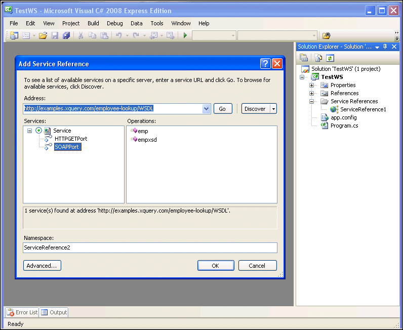
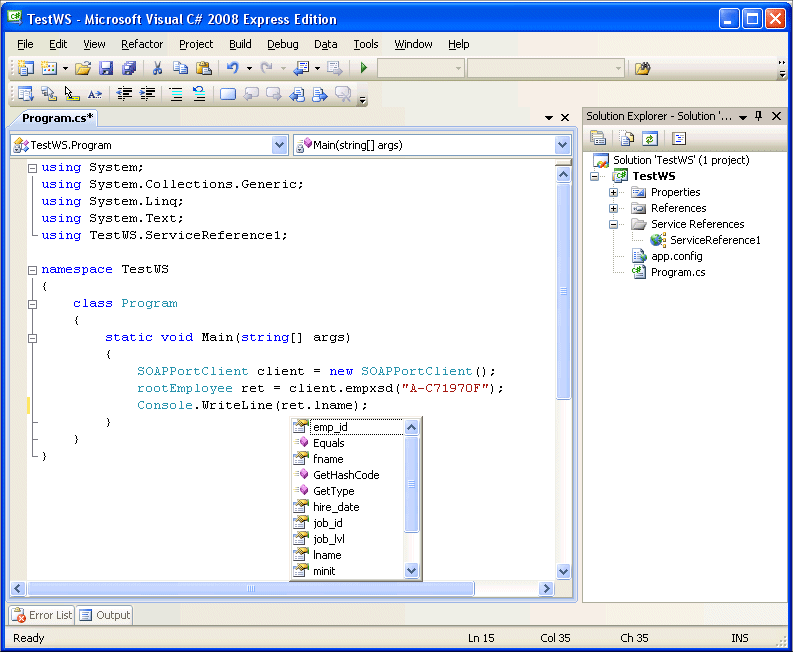
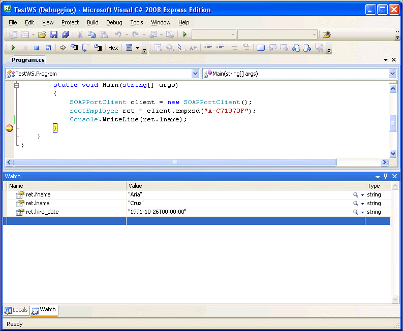

Using WSDL Service References
Modern IDEs like Microsoft Visual Studio and Eclipse provide complete support for consuming Web services – for most of them, making the WSDL document available to the IDE is all that is needed to generate a set of classes that can be used to manipulate the Web service as if it was a local library.
For example, when we open the Employee Lookup WSDL in Microsoft Visual Studio as a Service Reference, the emp and empxsd operations are exposed, as shown in the following illustration.

Such a binding framework works extremely well when the WSDL document makes use of XML Schema to describe the SOAP message payloads.
Consider the following simple C# application, which uses the empxsd operation, as shown here:
using System; using System.Collections.Generic; using System.Linq; using System.Text; using TestWS.ServiceReference1; namespace TestWS { class Program { static void Main(string[] args) { SOAPPortClient client = new SOAPPortClient(); rootEmployee ret = client.empxsd("A-C71970F"); Console.WriteLine(ret.lname); } } }As seen in the following illustration, schema information about the employee element – employee ID, first and last name, hire date, and so on – is exposed to the IDE, simplifying and enriching the application development process.

If we run this application in debug mode inside Microsoft Visual Studio, we can see that the variables (first name, last name, and so on) are initialized with values from the Web service.

Augmenting WSDL with External XML Schema
To illustrate how XML Schema can be used to augment a data service WSDL, let's revisit the Employee Lookup XQuery (emp.xquery), and make a few modifications, as shown:
declare variable $id as xs:string external; <ns:root xmlns:ns="http://www.employee.com"> { for $employee in collection("pubs.dbo.employee")/employee where $employee/emp_id = $id return $employee } </ns:root>This query is almost identical to the one introduced earlier in this example, except that the root element (
<ns:root>) is now placed in a different namespace. Accordingly, we need to create an XML Schema – we’ll call it employee.xsd – that describes what the<ns:root>element looks like. We'll also put this XML Schema in the same directory as emp.xquery and empxsd.xquery:<?xml version="1.0" encoding="UTF-8"?> <xs:schema xmlns:xs="http://www.w3.org/2001/XMLSchema" targetNamespace="http://www.employee.com" xmlns:ns="http://www.employee.com" elementFormDefault="qualified"> <xs:element name="root"> <xs:complexType> <xs:sequence> <xs:element name="employee" form="unqualified"> <xs:complexType> <xs:sequence> <xs:element name="emp_id" form="unqualified" type= "xs:NCName"/> <xs:element name="fname" form="unqualified" type= "xs:NCName"/> <xs:element name="minit" form="unqualified"/> <xs:element name="lname" form="unqualified" type= "xs:NCName"/> <xs:element name="job_id" form="unqualified" type= "xs:integer"/> <xs:element name="job_lvl" form="unqualified" type= "xs:integer"/> <xs:element name="pub_id" form="unqualified" type= "xs:integer"/> <xs:element name="hire_date" form="unqualified" type= "xs:NMTOKEN"/> </xs:sequence> </xs:complexType> </xs:element> </xs:sequence> </xs:complexType> </xs:element> </xs:schema>If we now open our WSDL URL, we can see that the embedded XML Schema contains an import statement referencing the XML Schema associated with our WSDL:
<xs:schema xmlns:xs="http://www.w3.org/2001/XMLSchema" targetNamespace="http://www.datadirect.com" attributeFormDefault="unqualified" elementFormDefault="qualified"> <xs:import schemaLocation="employee.xsd" namespace="http://www.employee.com"/> <xs:element name="empxsd"> <xs:complexType> <xs:all> <xs:element name="id" type="xs:string"/> </xs:all> </xs:complexType> </xs:element> <xs:element name="Output" type="xs:anyType"/> </xs:schema>Now, the SOAP message that describes the operation's return types references the global element
<ns:root>defined in the WSDL XML Schema: